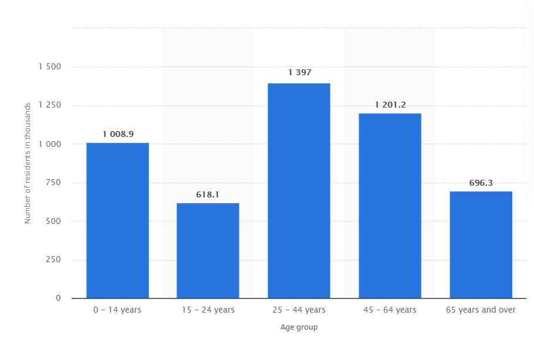

Irish Platform for Patient Organisations, Science and Industry - Jury Selection and
Data Stratification
The premise of this project was that IPPOSI needed a jury of 25 people to deliberate on
whether or not we should share our personal data for the betterment of healthcare. I was
the software consultant of the team and it was my job to take all the potential jury candidates
and create a jury of 25 people, such that they would represent the Irish population according to the
last census report. In total there were 6 criteria that needed to be considered when making the jury.

Above is a breakdown of the Irish population based on age. This was one of the criteria that needed to be satisfied. The
others included gender, ethncity, province, education background and opinion.
There were over a thousand candidates so to select the jury I created a python script that would
pick a jury based on the criteria needed. I was careful when creating this script to avoid positive discrimination.
I learned a lot from this project. It was a great opportunity to work on a real world project.
This thaught me how to act professionally, how to conduct myself in a proper manner and improved my
communication skills. I now feel more confident going into real world projects.
Here is a link to the project report if you would like to read more about it.